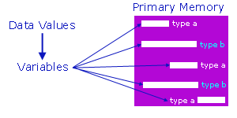

Module B - Computations
Variables
Choose an appropriate data type for each variable in a program, based on
knowledge of the features required of the variable and the internal
representation of the available data type
"For larger projects, strongly-typed languages are dramatically more productive, because many errors are caught at compile time rather than at run time (or worse, after your project has shipped)." (J Strout)
Data Types |
Integral Types |
Floating-Point Types |
Declarations |
Exercises
A variable holds data that can change in value during the lifetime of the variable.
The C language associates a data type with each variable.
Each data type occupies a
compiler-defined number of bytes.

Associating a data type with each variable imposes restrictions on the range of
values that the variable may hold.
Primitive Data Types
Typed languages, such as C, subdivide the universe of data values into
sets of distinct type.
A data type defines:
- how the values are stored and
- how the operations on those values are performed.
C has four primitive data types:
An int occupies one word and can store an integer.
On a 32-bit machine, an int occupies 4 bytes:
| int (32-bit machines) |
| 1 Byte |
1 Byte |
1 Byte |
1 Byte |
| | | | | | | | |
| | | | | | | |
| | | | | | | |
| | | | | | | |
A char occupies one byte and can
store a character or a symbol:
A float typically occupies 4 bytes and can store
a single-precision floating-point number:
| float |
| 1 Byte |
1 Byte |
1 Byte |
1 Byte |
| | | | | | | | |
| | | | | | | |
| | | | | | | |
| | | | | | | |
A double typically occupies 8 bytes and can store
a double-precision floating-point number:
| double |
| 1 Byte |
1 Byte |
1 Byte |
1 Byte |
1 Byte |
1 Byte |
1 Byte |
1 Byte |
| | | | | | | | |
| | | | | | | |
| | | | | | | |
| | | | | | | |
| | | | | | | |
| | | | | | | |
| | | | | | | |
| | | | | | | |
Qualifiers
We can qualify the int data type so that it contains
a minimum number of bits.
The qualifiers are:
A short contains at least 16 bits:
A long contains at least 32 bits:
| long |
| 1 Byte |
1 Byte |
1 Byte |
1 Byte |
| | | | | | | | |
| | | | | | | |
| | | | | | | |
| | | | | | | |
A long long contains at least 64 bits:
| long long |
| 1 Byte |
1 Byte |
1 Byte |
1 Byte |
1 Byte |
1 Byte |
1 Byte |
1 Byte |
| | | | | | | | |
| | | | | | | |
| | | | | | | |
| | | | | | | |
| | | | | | | |
| | | | | | | |
| | | | | | | |
| | | | | | | |
We can also qualify the double
data type.
A long double typically
occupies at least 64 bits:
| long double |
| 1 Byte |
1 Byte |
1 Byte |
1 Byte |
1 Byte |
1 Byte |
1 Byte |
1 Byte |
| | | | | | | | |
| | | | | | | |
| | | | | | | |
| | | | | | | |
| | | | | | | |
| | | | | | | |
| | | | | | | |
| | | | | | | |
Standard C does not specify that a long double must occupy a minimum number of bits, only that
it occupies no less bits than a double.
Representation of Integral Values
C stores integral values in equivalent binary form.
Non-Negative Values
To convert a non-negative integer
into its binary equivalent,
we distinguish the component bits,
focus on the lowest order
bit as our first target, and then take the value
- divide by 2,
- put the remainder into the target,
- make the next higher order bit the new target, and
- repeat this set of instructions
Consider the number 92:
- Identify the first target bit as bit 0
- Take 92, divide it by 2 and put the remainder (0) in bit 0
- Take the result (46), divide it by 2 and put the remainder (0) in bit 1
- Take the result (23), divide it by 2 and put the remainder (1) in bit 2
- Take the result (11), divide it by 2 and put the remainder (1) in bit 3
- Take the result (5), divide it by 2 and put the remainder (1) in bit 4
- Take the result (2), divide it by 2 and put the remainder (0) in bit 5
- Take the result (1), divide it by 2 and put the remainder (1) in bit 6
- Take the result (0), divide it by 2 and put the remainder (0) in bit 7
| Bit # |
7 | 6 | 5 | 4 | 3 | 2 | 1 | 0 |
| Value |
0 | 1 | 2 | 5 | 11 | 23 | 46 | 92 |
| Bit Values |
0 | 1 | 0 | 1 | 1 | 1 | 0 | 0 |
(Right to left bit numbering is for illustrative purposes only.
Intel machines use this little-endian ordering.
Motorola machines use big-endian ordering - left
to right.)
To convert a binary number into its decimal
equivalent, we multiply each bit value by its
corresponding power of 2 and add the bit values
together.
Consider the 8-bit number 010111002:
| Bit # |
7 | 6 | 5 | 4 | 3 | 2 | 1 | 0 |
| Power of 2 |
7 | 6 | 5 | 4 | 3 | 2 | 1 | 0 |
| Bit Values |
0 | 1 | 0 | 1 | 1 | 1 | 0 | 0 |
| Multiplier |
128 | 64 | 32 | 16 | 8 | 4 | 2 | 1 |
| Byte Value |
0*128 + 1*64 + 0*32 + 1*16 + 1*8 + 1*4 + 0*2 + 0*1 = 92 |
In-class practice: try exercise 1 on handout 3.
Negative and Positive Values
Computers store negative integers using encoding schemes. The schemes
available include:
- two's complement notation,
- one's complement notation, and
- sign magnitude notation.
All of these schemes represent non-negative integers identically.
The most popular scheme is two's complement.
With two's complement notation, separate subtraction circuits in
the ALU are unnecessary and there is only one representation of 0.
To obtain the two's complement of an integer, we
For example,
we represent the integer -92 by 101001002
| Bit # |
7 | 6 | 5 | 4 | 3 | 2 | 1 | 0 |
| 92 => |
0 | 1 | 0 | 1 | 1 | 1 | 0 | 0 |
| Flip Bits |
1 | 0 | 1 | 0 | 0 | 0 | 1 | 1 |
| Add 1 |
0 | 0 | 0 | 0 | 0 | 0 | 0 | 1 |
| -92 => |
1 | 0 | 1 | 0 | 0 | 1 | 0 | 0 |
The range of values that an integral data type can hold depends upon the word size of the
host machine and the encoding scheme for negative values. For a two's
complement scheme on a 32-bit machine, the ranges are:
| Type | Size | Min | Max |
| short | >=16 bits | -32,768 | 32,767 |
| int | 1 word | -2,147,483,648 | 2,147,483,647 |
| long | >=32 bits | -2,147,483,648 | 2,147,483,647 |
| long long | >=64 bits | -9,223,372,036,854,775,808 | 9,223,372,036,854,775,807 |
For a two's complement scheme on a 16-bit machine, the ranges are:
| Type | Size | Min | Max |
| short | >=16 bits | -32,768 | 32,767 |
| int | 1 word | -32,768 | 32,767 |
| long | >=32 bits | -2,147,483,648 | 2,147,483,647 |
| long long | >=64 bits | -9,223,372,036,854,775,808 | 9,223,372,036,854,775,807 |
Note that only the limits on an int vary from machine to machine,
while the limits on a short,
long, and long long
do not vary.
In-class practice: try exercise 2 on handout 3.
Unsigned ints
We can use all of the bits available to store the value of a
variable if we know that the variable will always contain only
non-negative integer values. In such cases, we add the qualifier
unsigned:
- unsigned short
- unsigned int
- unsigned long
- unsigned long long
With unsigned variables, there is no need for a negative-value encoding scheme.
The range that an unsigned data type can hold depends
only upon the word size of the host machine
| Type | Size | Min | Max - 32 bit | Max - 16 bit |
| unsigned short | >=16 bits | 0 | 65,535 |
| unsigned int | 1 word | 0 | 4,294,967,295 | 65,535 |
| unsigned long | >=32 bits | 0 | 4,294,967,295 |
| unsigned long long | >=64 bits | 0 | 18,446,744,073,709,551,615 |
Cultural Symbols
We store cultural symbols using an integral data type.
Although cultural symbols have no intrinsic numerical representation,
we associate each symbol with a unique integer.
We call such associations encoding sequences.
We store a symbol by storing the integer associated with the symbol.
Encoding sequences predate modern computers. Consider for instance
Morse code.
To accommodate the various cultures throughout the world, we need
a very broad symbol repertoire. Over 60 encoding sequences
have already been defined. They include
UCS-4 is broad enough to represent all culture symbols throughout the world.
BMP is sufficiently broad to represent the major cultural symbols including the 20,000
or so Chinese-Japanese-Korean ideographs. Unicode (version 3.0) is fully
compatible with BMP. ASCII is sufficiently broad to represent
alphabetic symbols.
ASCII is a subset of BMP and Unicode, which in turn
are subsets of UCS-4. EBCDIC is an encoding sequence
developed by IBM.
The two popular encoding sequences are ASCII and EBCDIC.
Both use a single byte.
ASCII originates in paper tape and Morse code
and is listed here.
ASCII represents the letter A by the bit pattern 010000012
or 0x41 or 65. EBCDIC originates in punched cards and is
listed here.
EBCDIC represents the letter A by the bit pattern 110000012
or 0xC1 or 193. Note the different values for A under ASCII and EBCDIC.
The EBCDIC symbol order differs from the ASCII symbol order. In ASCII, the
digits precede the letters, while in EBCDIC, the letters precede the digits.
If we use either sequence to sort symbolic information that contains digits
and letters, we will obtain different results.
We use the ASCII encoding sequence throughout this course.
In-class practice: try exercise 3 on handout 3.
The range of values that a character data type can store varies from platform to platform.
Compilers do not treat the char data type consistently. Some
treat it as signed, while others treat it as unsigned.
For example, phobos treats char
as unsigned, while .net treats
char as signed.
The ASCII sequence uses the common range [0,127] and we can expect the same results
regardless of platform.
| Type | Size | Min | Max |
| unsigned char | 1 byte | 0 | 255 |
| signed char | 1 byte | -128 | 127 |
| char | 1 byte | <=0 | >=127 |
Representation of Floating-Point Data
Computers store floating-point data using
two separate components: an exponent and a mantissa.
The models in use vary across implementations.
C leaves the model open to definition. The most
popular model is the IEEE (I-triple-E or
Institute of Electrical and Electronics Engineers) Standard 754
for Binary and Floating-Point Arithmetic.
Under IEEE 754,
the model for a float
occupies 32 bits, has one sign bit, a 23-bit mantissa and
a 8-bit exponent:
| float |
| 1 Byte |
1 Byte |
1 Byte |
1 Byte |
| s |
exponent |
mantissa |
| | | | | | | | |
| | | | | | | |
| | | | | | | |
| | | | | | | |
We calculate the value using the formula
x = sign * 2exponent * { 1 + f12-1 + f22-2 + ... + f232-23}
|
where fi is the value of bit
i and
Under the IEEE standard,
the model for a double
occupies 64 bits, has one sign bit, a 52-bit mantissa and
a 11-bit exponent:
| double |
| 1 Byte |
1 Byte |
1 Byte |
1 Byte |
1 Byte |
1 Byte |
1 Byte |
1 Byte |
| s |
exponent |
mantissa |
| | | | | | | | |
| | | | | | | |
| | | | | | | |
| | | | | | | |
| | | | | | | |
| | | | | | | |
| | | | | | | |
| | | | | | | |
We calculate the value using the formula
x = sign * 2exponent * { 1 + f12-1 + f22-2 + ... + f522-52}
|
where fi is the value of bit
i and
-1022 <= exponent <= 1023
|
The limits on
float and double under the IEEE standard are:
| Type | Size | Significant | Min Exponent | Max Exponent |
| float | 4 bytes | 6 | -37 | 38 |
| double | 8 bytes | 15 | -307 | 308 |
The exponent range values in this table are
decimal (base 10).
Note that both the number of significant digits
and the range of the exponent are limited.
Declarations
We allocate memory for a variable by specifying its data type
and optionally an initial value
data_type identifier [= initial value];
For example, to allocate memory for the variables section,
numberOfClasses and cashFare,
and to initialize the cashFare to 2.25, we assign
the data typeschar,
int, and double
respectively and write
char section;
int numberOfClasses;
double cashFare = 2.25;
|
We conclude each declaration with a semi-colon.
In allocating memory for variables of identical data type, we may
group the identifiers in a single declaration and separate them with commas.
For example,
char section, letter, initial, answer;
int numberOfClasses, children, books, rooms;
double cashFare, money, height, weight;
|
Naming Conventions
The identifiers that we use for variables must satisfy the following rules:
- an identifier must start with a letter or underscore (_)
- an identifier may contain any combination of letters, digits and underscore (_)
- an identifier must not be a C reserved word
Some compilers allow more than 31 characters, while others do not.
To be safe, we avoid using more than 31 characters.
The C reserved words are
auto _Bool break case
char _Complex const continue
default restrict do double
else enum extern float
for goto if _Imaginary
inline int long register
return short signed sizeof
static struct switch typedef
union unsigned void volatile
while
For upward compatibility with C++, we also avoid using
the C++ reserved words
asm export private throw
bool false protected true
catch friend public try
class mutable reinterpret_cast typeid
const_cast namespace static_cast typename
delete new template using
dynamic_cast operator this virtual
explicit wchar_t
In-class practice: try exercise 4 on handout 3.
Exercises
- Study the ASCII table here
- Practice converting binary data to and from decimal representation
- Read pages 9-10, 13, 123-136, 141, 145 from Evan Weaver's subject notes.
- Pick ten different variables at random, select the data
type that is most appropriate for each variable and write the
C declarations for your set of variables.
|